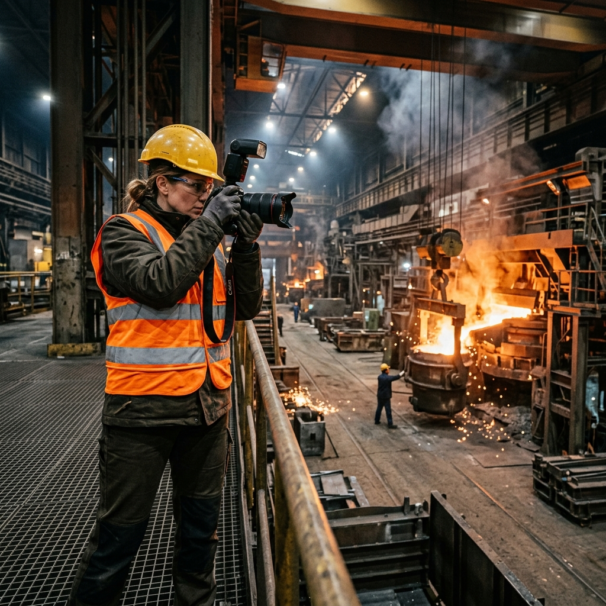
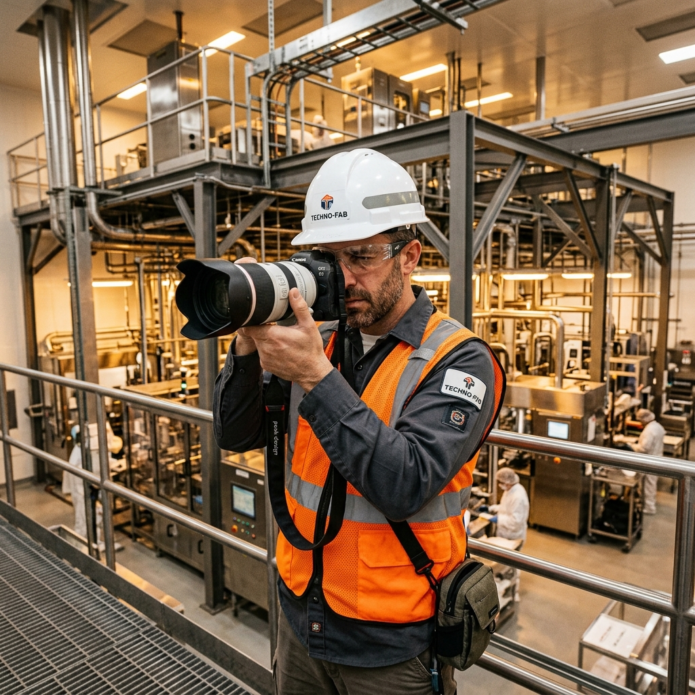

Meet the photographer capturing industrial processes with absolute safety compliance and cinematic precision.
I didn't start my career behind a camera; I started it in steel-toed boots. For five years, I worked as a field engineer on active civil infrastructure projects, surrounded by the roar of heavy machinery and the grit of active assembly floors. I loved the raw power of human engineering, but I realized how difficult it was for companies to communicate that massive scale and detailed workmanship to the outside world.
In 2014, I traded my clipboard for a full-frame camera and founded Indus Photo. By combining my background in engineering logistics with professional photography, I created a B2B media partnership built specifically for hazardous, highly regulated environments.
Today, I travel nationwide to document heavy industries, energy sectors, and civil rollouts. Because I hold OSHA-30 credentials and a TWIC card, site safety officers know I speak their language. I capture the cinematic reality of your operations safely, with zero disruption to your active crew's schedule.

I deploy specific equipment and safety guidelines tailored to heavy sector demands, minimizing project disruption.
Equipped with OSHA-30 credentials, active TWIC port access cards, and complete site PPE systems for rapid site entry.
I scout active site dynamics beforehand to plan shots that avoid interfering with heavy operators and plant schedules.
Using professional full-frame sensors and fast apertures, I capture crisp, noise-free images in dark industrial assembly bays.
I maintain top-tier industrial safety clearances to ensure compliance and rapid site approval.
Hazard Identification Certified
Commercial Drone Licensing
Transportation Worker Credentials
Commercial General Liability
Common questions regarding commercial insurance bounds, TWIC access, safety protocols, drone licenses, and copyright releases.
Yes. I hold active **OSHA-30 safety credentials** for construction and general industry, and I carry a current **TWIC (Transportation Worker Identification Credential)** card for port and petrochemical installations. I supply my own standard-compliant PPE (steel-toe safety boots, Class 3 high-viz vest, hardhat, protective eyewear, and hearing protection) and always participate in pre-shoot site inductions.
Indus Photo maintains a **$5,000,000 commercial general liability policy** specifically rated for hazardous industrial environments, aerial drone operations, and marine infrastructure works. Certificates of Insurance (COI) listing your firm as an additional insured can be issued via my brokerage within 24 hours of booking confirmation.
I work in alignment with site safety officers and construction superintendents. Prior to the shoot date, I coordinate a detailed shot list to identify key machinery phases, structural angles, or personnel focus areas. This ensures I capture necessary PR and engineering assets during transition windows or planned pauses, maintaining **zero disruptions** to active production lines.
Yes. I am an **FAA Part 107 licensed commercial UAS pilot**. I coordinate all airspace authorizations, low-altitude waivers (LAANC), and safety clearances near airports, power grids, or municipal projects. My drone equipment is registered and fully covered under my commercial liability policy.
My standard agreement grants engineering, PR, and construction firms a comprehensive **marketing and media usage license**. This permits royalty-free, perpetual use for corporate websites, public bids, proposals, social media, marketing brochures, and PR publications. Full copyright buyout and exclusive proprietary transfers are also available upon request.
While based in Pittsburgh, I travel **nationwide and internationally** to capture heavy infrastructure networks, offshore energy operations, and manufacturing plants. Travel fees are billed transparently at-cost or coordinated via a flat mobilization rate. All flight clearances and shipping of heavy gear are managed directly by me.
High-resolution, custom color-graded digital proofs are typically delivered via secure cloud portals within **7 to 10 business days** of the shoot. For PR firms working on immediate press announcements, a select set of expedited images can be color-graded on-site and delivered within 24 hours.
Infrastructure shoots rely heavily on environmental conditions. I monitor conditions starting 5 days out. If severe rain, low-visibility mist, or safety hazards prevent operations, I reschedule to my pre-coordinated rain date. No additional fee is charged if weather forces a postponement prior to mobilization.